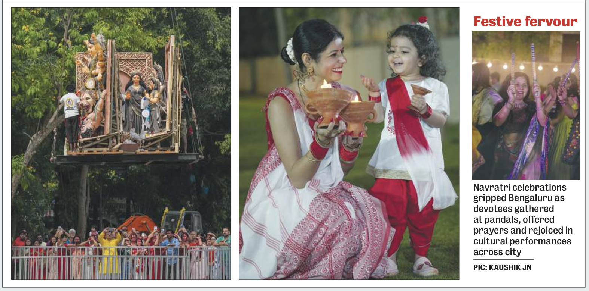
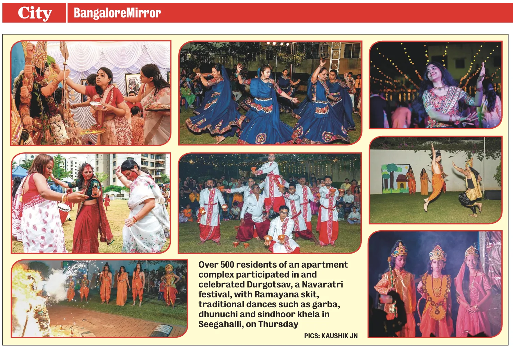
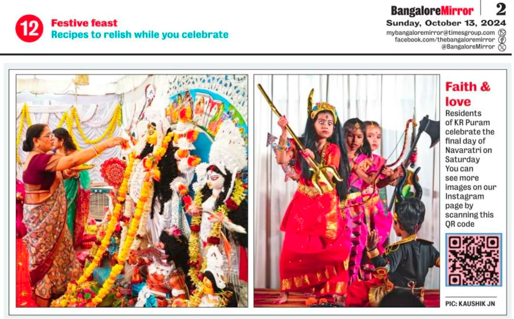

Media Coverage · 2026
Festive fervour and Navratri celebrations across the SLG community.
SLGBCA Cultural Hub

Festive fervour and Navratri celebrations across the SLG community.

BangaloreMirror coverage of our Durga Puja celebrations.

BangaloreMirror coverage of our community celebrations.